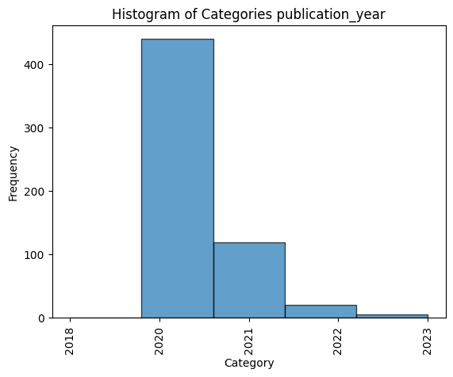

Preprint Analysis#
How to get all preprints of a topics?#
We use OpenAlex to retrieve all articles which are a preprint, but have so far not been published by a peer-reviewed journal.
1. Load libraries#
!pip install pandas
!pip install pyalex
!pip install matplotlib
Requirement already satisfied: pandas in /home/natalie-widmann/Dokumente/Datenjournalismus/InvestigatingScience/research_recipes/.venv/lib/python3.12/site-packages (2.2.2)
Requirement already satisfied: numpy>=1.26.0 in /home/natalie-widmann/Dokumente/Datenjournalismus/InvestigatingScience/research_recipes/.venv/lib/python3.12/site-packages (from pandas) (2.0.0)
Requirement already satisfied: python-dateutil>=2.8.2 in /home/natalie-widmann/Dokumente/Datenjournalismus/InvestigatingScience/research_recipes/.venv/lib/python3.12/site-packages (from pandas) (2.9.0.post0)
Requirement already satisfied: pytz>=2020.1 in /home/natalie-widmann/Dokumente/Datenjournalismus/InvestigatingScience/research_recipes/.venv/lib/python3.12/site-packages (from pandas) (2024.1)
Requirement already satisfied: tzdata>=2022.7 in /home/natalie-widmann/Dokumente/Datenjournalismus/InvestigatingScience/research_recipes/.venv/lib/python3.12/site-packages (from pandas) (2024.1)
Requirement already satisfied: six>=1.5 in /home/natalie-widmann/Dokumente/Datenjournalismus/InvestigatingScience/research_recipes/.venv/lib/python3.12/site-packages (from python-dateutil>=2.8.2->pandas) (1.16.0)
Requirement already satisfied: pyalex in /home/natalie-widmann/Dokumente/Datenjournalismus/InvestigatingScience/research_recipes/.venv/lib/python3.12/site-packages (0.14)
Requirement already satisfied: requests in /home/natalie-widmann/Dokumente/Datenjournalismus/InvestigatingScience/research_recipes/.venv/lib/python3.12/site-packages (from pyalex) (2.32.3)
Requirement already satisfied: urllib3 in /home/natalie-widmann/Dokumente/Datenjournalismus/InvestigatingScience/research_recipes/.venv/lib/python3.12/site-packages (from pyalex) (2.2.2)
Requirement already satisfied: charset-normalizer<4,>=2 in /home/natalie-widmann/Dokumente/Datenjournalismus/InvestigatingScience/research_recipes/.venv/lib/python3.12/site-packages (from requests->pyalex) (3.3.2)
Requirement already satisfied: idna<4,>=2.5 in /home/natalie-widmann/Dokumente/Datenjournalismus/InvestigatingScience/research_recipes/.venv/lib/python3.12/site-packages (from requests->pyalex) (3.7)
Requirement already satisfied: certifi>=2017.4.17 in /home/natalie-widmann/Dokumente/Datenjournalismus/InvestigatingScience/research_recipes/.venv/lib/python3.12/site-packages (from requests->pyalex) (2024.7.4)
Requirement already satisfied: matplotlib in /home/natalie-widmann/Dokumente/Datenjournalismus/InvestigatingScience/research_recipes/.venv/lib/python3.12/site-packages (3.9.1)
Requirement already satisfied: contourpy>=1.0.1 in /home/natalie-widmann/Dokumente/Datenjournalismus/InvestigatingScience/research_recipes/.venv/lib/python3.12/site-packages (from matplotlib) (1.2.1)
Requirement already satisfied: cycler>=0.10 in /home/natalie-widmann/Dokumente/Datenjournalismus/InvestigatingScience/research_recipes/.venv/lib/python3.12/site-packages (from matplotlib) (0.12.1)
Requirement already satisfied: fonttools>=4.22.0 in /home/natalie-widmann/Dokumente/Datenjournalismus/InvestigatingScience/research_recipes/.venv/lib/python3.12/site-packages (from matplotlib) (4.53.1)
Requirement already satisfied: kiwisolver>=1.3.1 in /home/natalie-widmann/Dokumente/Datenjournalismus/InvestigatingScience/research_recipes/.venv/lib/python3.12/site-packages (from matplotlib) (1.4.5)
Requirement already satisfied: numpy>=1.23 in /home/natalie-widmann/Dokumente/Datenjournalismus/InvestigatingScience/research_recipes/.venv/lib/python3.12/site-packages (from matplotlib) (2.0.0)
Requirement already satisfied: packaging>=20.0 in /home/natalie-widmann/Dokumente/Datenjournalismus/InvestigatingScience/research_recipes/.venv/lib/python3.12/site-packages (from matplotlib) (24.1)
Requirement already satisfied: pillow>=8 in /home/natalie-widmann/Dokumente/Datenjournalismus/InvestigatingScience/research_recipes/.venv/lib/python3.12/site-packages (from matplotlib) (10.4.0)
Requirement already satisfied: pyparsing>=2.3.1 in /home/natalie-widmann/Dokumente/Datenjournalismus/InvestigatingScience/research_recipes/.venv/lib/python3.12/site-packages (from matplotlib) (3.1.2)
Requirement already satisfied: python-dateutil>=2.7 in /home/natalie-widmann/Dokumente/Datenjournalismus/InvestigatingScience/research_recipes/.venv/lib/python3.12/site-packages (from matplotlib) (2.9.0.post0)
Requirement already satisfied: six>=1.5 in /home/natalie-widmann/Dokumente/Datenjournalismus/InvestigatingScience/research_recipes/.venv/lib/python3.12/site-packages (from python-dateutil>=2.7->matplotlib) (1.16.0)
from pyalex import Works, Authors, Sources, Institutions, Concepts, Publishers, Funders
from itertools import chain
import pandas as pd
import pyalex
import os
1. Define helper functions#
# Determine if any of the locations (journals) the paper is already published
def is_any_location_published(locations):
for location in locations:
if location['version'] == 'publishedVersion':
return True
return False
# Combine all authos
def join_authors(list_of_authors):
return ', '.join([author['author']['display_name'] for author in list_of_authors])
# Extract key information from the locations
def join_locations(list_of_locations):
summary = []
for location in list_of_locations:
if location['source']:
summary.append(f"{location['version']}: {location['source']['host_organization_name']} - {location['landing_page_url']}")
else:
summary.append(f"{location['version']} - {location['landing_page_url']}")
return ', '.join(summary)
def get_journal(primary_location):
source = primary_location.get('source', {})
if source:
return source.get('display_name', '')
return
2. Set the Topic & Year#
Set the year and the number of papers you want to obtain
# Variables reduce the size of the output and the time required for execution
topic = 'COVID'
year = None
n_max = 500 # when set to None all papers are queried
3. Get the preprints#
Run te following code to get the preprints for the specified parameters
# Query the
if year:
query = Works().search(topic).filter(type="article", publication_year=year, primary_location={'version': 'submittedVersion'}, locations={'is_published': False}).sort(cited_by_count="desc")
else:
query = Works().search(topic).filter(type="article", primary_location={'version': 'submittedVersion'}, locations={'is_published': False}).sort(cited_by_count="desc")
preprints = []
keys = ['id', 'title', 'publication_date', 'doi', 'cited_by_count', 'language']
# Iterate over all query results
for item in chain(*query.paginate(per_page=200, n_max=n_max)):
# Based on the published locations determine if it is a real preprint
locations_count = item.get('locations_count', None)
locations = item.get('locations', None)
# Only append the paper to the preprints if is not published in any other journal
if locations_count == 1 or not is_any_location_published(locations):
# get all relevant properties
properties = {key: item.get(key, None) for key in keys}
# include joined authors and locations
properties.update({'authors': join_authors(item['authorships']),
'locations': join_locations(item['locations']),
'journal': get_journal(item.get('primary_location', {})),
'location_count': locations_count})
preprints.append(properties)
4. Process & store the data#
df = pd.DataFrame.from_dict(preprints)
# Compute publication year
df['publication_year'] = df['publication_date'].str.split('-').str.get(0)
df
| id | title | publication_date | doi | cited_by_count | language | authors | locations | journal | location_count | publication_year | |
|---|---|---|---|---|---|---|---|---|---|---|---|
| 0 | https://openalex.org/W3013515352 | COVID-19 Screening on Chest X-ray Images Using... | 2020-03-27 | None | 273 | en | Jianpeng Zhang, Yutong Xie, Yi Li, Chunhua She... | submittedVersion - https://europepmc.org/artic... | None | 1 | 2020 |
| 1 | https://openalex.org/W3009111036 | Clinical Pathology of Critical Patient with No... | 2020-02-27 | None | 138 | en | Weiren Luo, Hongjie Yu, Jizhou Gou, Xiaoxing L... | submittedVersion - http://rucweb.tsg211.com/ht... | None | 1 | 2020 |
| 2 | https://openalex.org/W3016112654 | The COVID-19 risk perception: A survey on soci... | 2020-03-21 | https://doi.org/10.17632/wh9xk5mp9m.3 | 114 | en | Toan Luu Duc Huynh | submittedVersion: Springer Nature - https://da... | Economics bulletin | 1 | 2020 |
| 3 | https://openalex.org/W3077072215 | Undergraduate and Graduate Students' Mental He... | 2020-08-17 | None | 105 | en | Igor Chirikov, Krista M. Soria, Bonnie Horgos,... | submittedVersion - https://escholarship.org/co... | None | 1 | 2020 |
| 4 | https://openalex.org/W3012039349 | COVID-19: The First Public Coronavirus Twitter... | 2020-03-16 | None | 101 | en | Emily Chen, Kristina Lerman, Emilio Ferrara | submittedVersion - https://europepmc.org/artic... | None | 1 | 2020 |
| ... | ... | ... | ... | ... | ... | ... | ... | ... | ... | ... | ... |
| 582 | https://openalex.org/W3107567267 | Gendered Socio-economic Implications of the CO... | 2020-01-01 | None | 3 | en | Emmanuel Ndhlovu, Archiford Tembo | submittedVersion - https://ideas.repec.org/a/r... | None | 1 | 2020 |
| 583 | https://openalex.org/W3108417454 | SAÚDE DO IDOSO EM TEMPOS DE PANDEMIA COVID-19:... | 2020-10-22 | https://doi.org/10.5281/zenodo.4118417 | 3 | en | Maria Priscila Peixoto e Silva, Walquíria Lene... | submittedVersion: European Organization for Nu... | Zenodo (CERN European Organization for Nuclear... | 1 | 2020 |
| 584 | https://openalex.org/W3112705359 | Price Discrimination-Driven Algorithmic Collus... | 2020-09-24 | None | 3 | en | Salil K. Mehra | submittedVersion: RELX Group (Netherlands) - h... | Social Science Research Network | 1 | 2020 |
| 585 | https://openalex.org/W3112719799 | DESAFIOS DA IMPLEMENTAÇÃO DO ENSINO REMOTO | 2020-11-04 | https://doi.org/10.5281/zenodo.4252805 | 3 | pt | Dominique Guimarães de Souza, Jean Carlos Miranda | submittedVersion: European Organization for Nu... | Zenodo (CERN European Organization for Nuclear... | 1 | 2020 |
| 586 | https://openalex.org/W3113564277 | A PANDEMIA DA COVID-19 E OS IMPACTOS NA EDUCAÇÃO | 2020-12-19 | https://doi.org/10.5281/zenodo.4361693 | 3 | en | Jurenice da Silva Barreto, Marília Rafaela Oli... | submittedVersion: European Organization for Nu... | Zenodo (CERN European Organization for Nuclear... | 1 | 2020 |
587 rows × 11 columns
# Store data as CSV file
os.makedirs('./results', exist_ok=True)
df.to_csv(f'./results/openalex_preprints_{year}_{n_max}.csv')
5. Get a sample paper#
paper = df.iloc[0]
paper
id https://openalex.org/W3013515352
title COVID-19 Screening on Chest X-ray Images Using...
publication_date 2020-03-27
doi None
cited_by_count 273
language en
authors Jianpeng Zhang, Yutong Xie, Yi Li, Chunhua She...
locations submittedVersion - https://europepmc.org/artic...
journal None
location_count 1
publication_year 2020
Name: 0, dtype: object
6. Basic analysis#
import matplotlib.pyplot as plt
def plot_histogram(col, n=20):
df['category'] = df[col].astype('category').cat.codes
# Plot the histogram
plt.hist(df['category'], bins=len(df[col].unique()), edgecolor='black', alpha=0.7)
# Adding labels and title
plt.xlabel('Category')
plt.ylabel('Frequency')
plt.title(f'Histogram of Categories {col}')
# Adding x-ticks with original category names
categories = df[col].astype('category').cat.categories
plt.xticks(ticks=range(len(categories)), labels=categories, rotation=90)
df['publication_year'].value_counts()[:20]
publication_year
2020 440
2021 119
2022 21
2023 6
2018 1
Name: count, dtype: int64
plot_histogram('publication_year')

df['journal'].value_counts()[:20]
journal
Social Science Research Network 135
Zenodo (CERN European Organization for Nuclear Research) 73
arXiv (Cornell University) 24
PubMed 20
Economic Bulletin Boxes 17
MPRA Paper 16
FRB SF weekly letter 10
medRxiv 9
Economics bulletin 8
Choices 7
Liberty Street Economics 7
Carolina Digital Repository (University of North Carolina at Chapel Hill) 7
BIS quarterly review 6
Frontiers of Economics in China 6
DergiPark (Istanbul University) 6
EconStor Preprints 4
Policy Contributions 4
SOEPpapers on Multidisciplinary Panel Data Research 4
Australian journal of labour economics 3
The Economic Research Guardian 3
Name: count, dtype: int64
plot_histogram('journal')
/home/natalie-widmann/Dokumente/Datenjournalismus/InvestigatingScience/research_recipes/.venv/lib/python3.12/site-packages/IPython/core/events.py:82: UserWarning: Glyph 152 (\x98) missing from font(s) DejaVu Sans.
func(*args, **kwargs)
/home/natalie-widmann/Dokumente/Datenjournalismus/InvestigatingScience/research_recipes/.venv/lib/python3.12/site-packages/IPython/core/events.py:82: UserWarning: Glyph 156 (\x9c) missing from font(s) DejaVu Sans.
func(*args, **kwargs)
/home/natalie-widmann/Dokumente/Datenjournalismus/InvestigatingScience/research_recipes/.venv/lib/python3.12/site-packages/IPython/core/pylabtools.py:170: UserWarning: Glyph 152 (\x98) missing from font(s) DejaVu Sans.
fig.canvas.print_figure(bytes_io, **kw)
/home/natalie-widmann/Dokumente/Datenjournalismus/InvestigatingScience/research_recipes/.venv/lib/python3.12/site-packages/IPython/core/pylabtools.py:170: UserWarning: Glyph 156 (\x9c) missing from font(s) DejaVu Sans.
fig.canvas.print_figure(bytes_io, **kw)